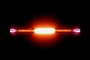

helium

Definition: Helium (from Greek: ἥλιος, romanized: helios, lit. 'sun') is a chemical element with the symbol He and atomic number 2. It is a colorless, odorless, tasteless, non-toxic, inert, monatomic gas and the first in the noble gas group in the periodic table. Its boiling point is the lowest among all the elements, and it does not have a melting point at standard pressure. It is the second lightest and second most abundant element in the observable universe, after hydrogen. It is present at about 24% of the total elemental mass, which is more than 12 times the mass of all the heavier elements combined. Its abundance is similar to this in both the Sun and in Jupiter, due to the very high nuclear binding energy (per nucleon) of helium-4, with respect to the next three elements after helium. This helium-4 binding energy also accounts for why it is a product of both nuclear fusion and radioactive decay. The most common isotope of helium in the universe is helium-4, the vast majority of which was formed during the Big Bang. Large amounts of new helium are created by nuclear fusion of hydrogen in stars.
Source: Wikipedia
Wikipedia Page (Something wrong with this association? Let us know.)
Wikidata Page (Something wrong with this association? Let us know.)
Occurs in: